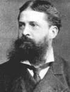

Philosophy Pages
| Dictionary | Study Guide | Logic | F A Q s | ||
|---|---|---|---|---|---|---|
| History | Timeline | Philosophers | Locke | |||
| Philosophy Pages
| Dictionary | Study Guide | Logic | F A Q s | ||
|---|---|---|---|---|---|---|
| History | Timeline | Philosophers | Locke | |||

|
Life and Works . . Belief . . Reality . . Pragmatism Bibliography Internet Sources |
Charles Sanders Peirce studied philosophy and chemistry at Harvard, where his father, Benjamin Peirce, was professor of mathematics and astronomy.
Although he showed early signs of great genius, an unstable personal life prevented Peirce from fulfilling his early promise.
He wrote widely and delivered several series of significant lectures, but never completed the most ambitious of his philosophical projects.
After a respectable scientific career studying the effects of gravitation with the U.S. Coast and Geodetic Survey, Peirce taught logic and philosophy for five years at Johns Hopkins University. In 1887, however, he retired to a life of isolation, poverty, and illness in Milford, Pennsylvania.

Peirce's early philosophical development relied on a Kantian theory of judgment, but careful study of the logic of relations led him to abandon syllogistic methods in favor of the study of language and belief. His place as the founder of American pragmatism was secured by a pair of highly original essays that apply logical and scientific principles to philosophical method. In The Fixation of Belief (1877) Peirce described how human beings converge upon a true opinion, each of us removing the irritation of doubt by forming beliefs from which successful habits of action may be derived. This theory was extended in How to Make Our Ideas Clear (1878) to the very meaning of concepts, which Peirce identified with the practical effects that would follow from our adoption of them. 
In his extensive logical studies, Peirce developed a theory of signification that anticipated many features of modern semiotics, emphasizing the role of the interpreting subject. To the traditional logic of deduction and induction, Peirce added explicit acknowledgement of abduction as a preliminary stage in productive human inquiry. Continuing to defend a Kantian system of categories, Peirce proposed a descriptive metaphysics that presumed the reality of external referents for our sensations.
|
Recommended Reading:
Primary sources:
Secondary sources:
Additional on-line information about Peirce includes:
|